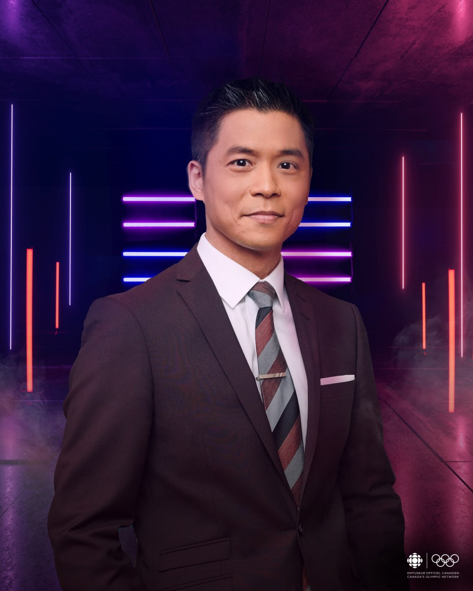

Andrew Chang is a Aisan Canadian televasion host working at the CBC news station. He is currently a host of the National which is a CBC news show for news broadcasting. The show focuses on important events across the world. Andrew have a very unique background. He grew up in a family where his dad spoke catonese and his mother spoke Mandrine. Moving to Montreal, Andrew leanred how to speak French and mastered the laungrage during the years of living there.
After graduating highschool, Andrew attended Charleton Univeristy to study journalism. Being a young journalist, Andrew joined CBC and worked in the CBC Vancouver and CBC Montreal show as a Chief staff reporters.
Andrew Chang is currently working alongside with Adrienne Arsenault in Toronto. Prior to joing "The National" show, Andrew worked as various positions in the CBC. One of his memorable events includes: The 2011 Fedaral election night. During the Olympics, he was a part of the CBC broadcasting team in 2014 and 2016.
Andrew is very dedicated to his job as a journalist. When he was working at the 2016 Rio Olympics, he was interviewd for how he can produce such interesting articles. Andrew said he does a "LOT" of prepration before the games. His preprations include researching the structure of sports being played and the time of the event. Sometimes his research goes so deep to a point where he feels like he is competing in the Olympics and is a professional athelete.